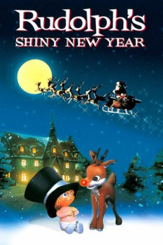

Country:United States, 50 minutes
Spoken languages:English
Genres:Animation, Fantasy, Family, Comedy
Director(s):Arthur Rankin Jr., Jules Bass
Writer(s):Romeo Muller
Video Codec:Unknown
Number: 6887

Certification:G
Storyline:
Rudolph must find Happy, the baby new year, before the midnight of New Year's Eve.
Cast:
Red Skelton (voice of Father Time / Baby Bear), Frank Gorshin (voice of Sir Ten-to-Three), Morey Amsterdam (voice of One Million), Harold Peary (voice of Big Ben), Paul Frees (as Santa Claus / Aeon / General Ticker / Seventeen Seventy Six)
Medium: Media file,
Location: D:\Complete Rankin Bass Christmas\Rudolph's Shiny New Year.mp4
Loaned: No
Aspect ratio: Unknown